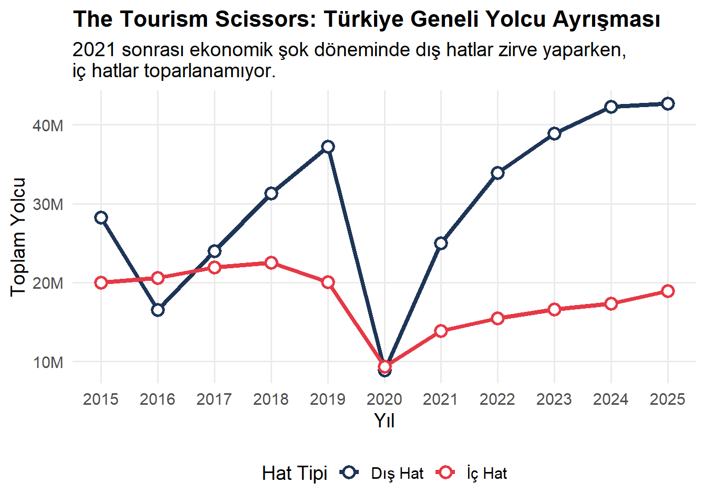
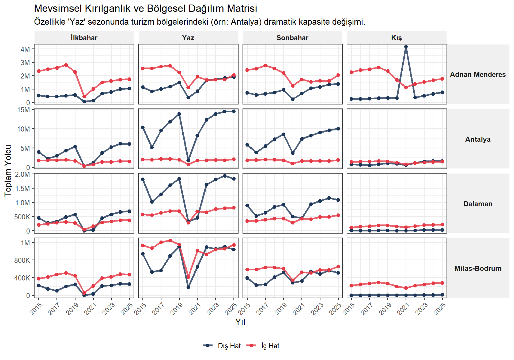
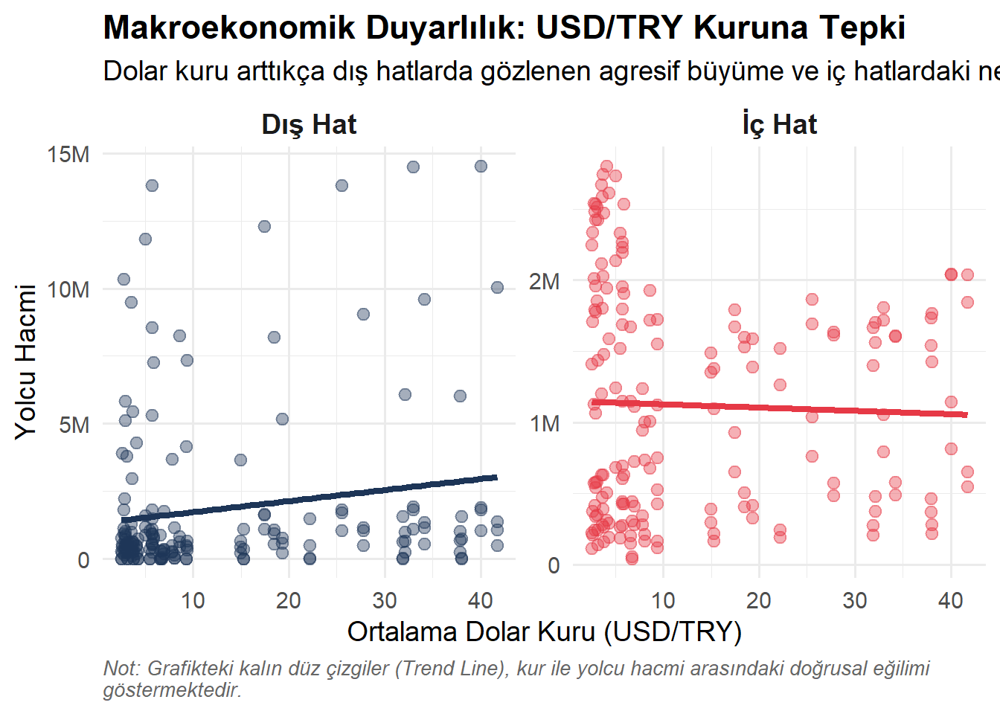
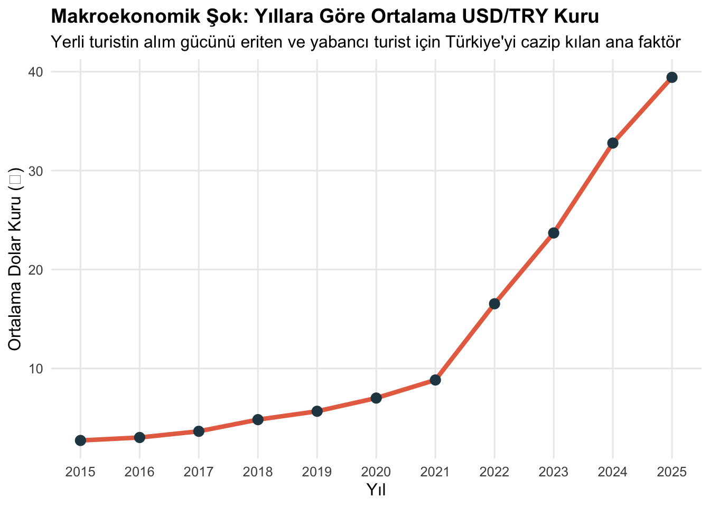
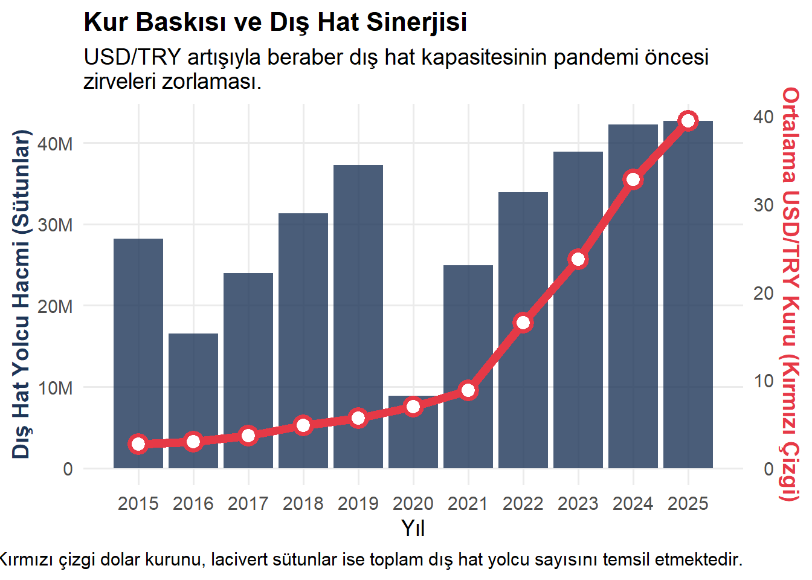
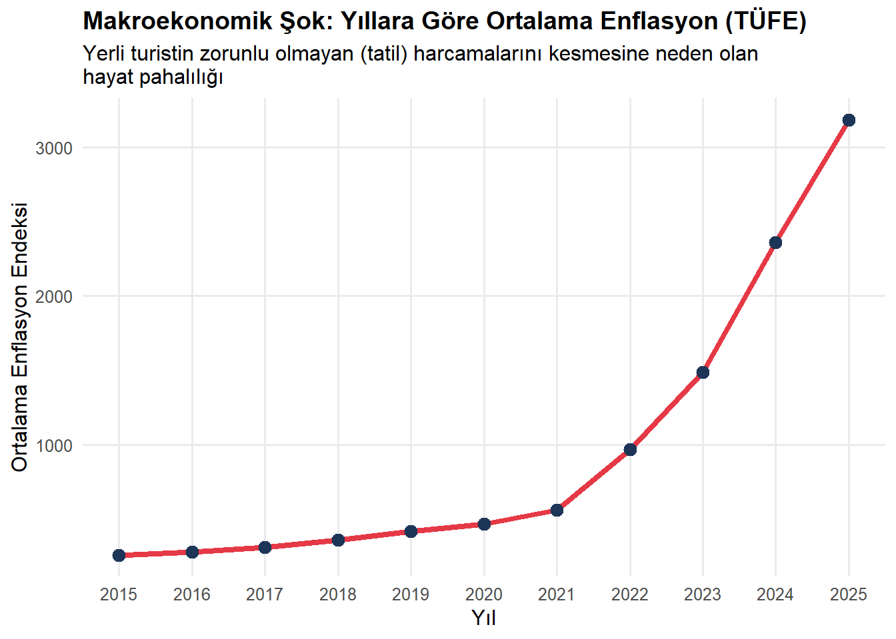
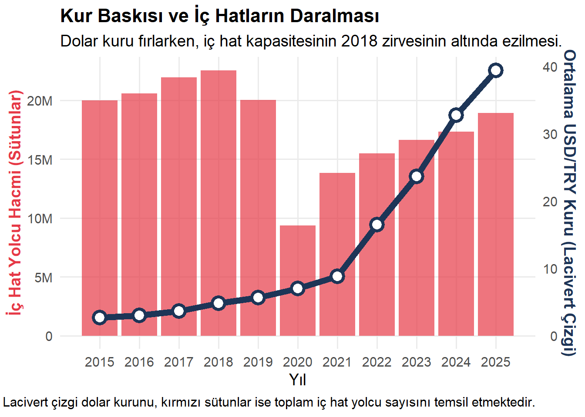
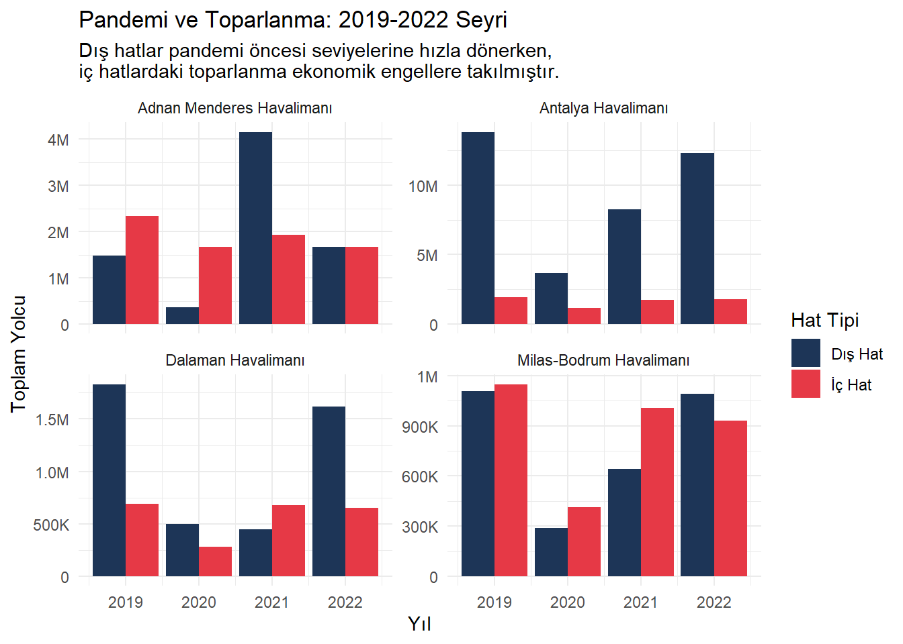
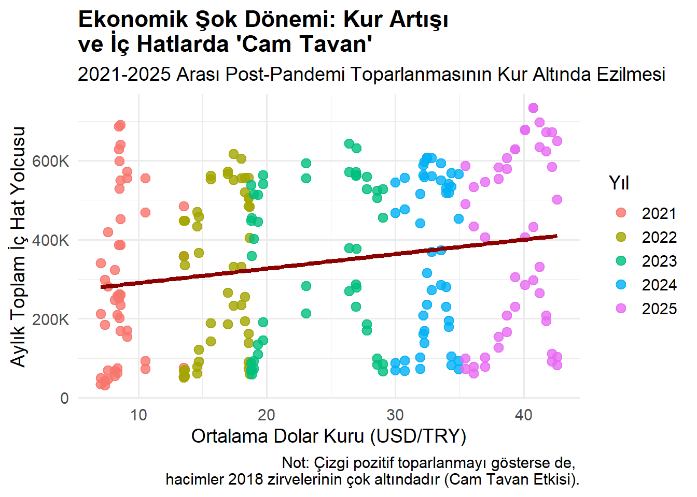

library(tidyverse)
library(readxl) # Excel okumak için gerekli kütüphane
library(scales)
# Veriyi oku (Dosya ismini 'tourism_data.xlsx' yaptığını varsayıyorum)
df <- read_excel("tourism_data.xlsx")
# Veri temizleme ve Mevsim mühendisliği
df_clean <- df %>%
select(Yıl, Ay, Havalimanı, `Hat Tipi`, `Aylık Yolcu`, `USD/TRY`, Enflasyon) %>%
filter(!is.na(Yıl)) %>%
mutate(
Mevsim = case_when(
Ay %in% c("Aralık", "Ocak", "Şubat") ~ "Kış",
Ay %in% c("Mart", "Nisan", "Mayıs") ~ "İlkbahar",
Ay %in% c("Haziran", "Temmuz", "Ağustos") ~ "Yaz",
Ay %in% c("Eylül", "Ekim", "Kasım") ~ "Sonbahar"
),
Mevsim = factor(Mevsim, levels = c("İlkbahar", "Yaz", "Sonbahar", "Kış"))
)
# Mevsimsel Agregasyon
df_seasonal <- df_clean %>%
group_by(Yıl, Mevsim, Havalimanı, `Hat Tipi`) %>%
summarise(
Toplam_Yolcu = sum(`Aylık Yolcu`, na.rm = TRUE),
Ort_USD = mean(`USD/TRY`, na.rm = TRUE),
.groups = "drop"
)
# GörselleştirmeAnaliz ve Bulgular
Key Takeaways
- Yaz aylarında iç ve dış hat çizgileri arasında belirgin bir ayrışma (X kesişimi) gözlemlenmiştir.
- Kış aylarındaki yolcu trendleri ekonomik şoklara rağmen daha paralel seyretmektedir.
- Döviz kurundaki artışın yerli turist trafiğindeki düşüşle olan doğrudan ilişkisi tespit edilmiştir.
“Tourism Scissors” Matrisi
1. Ana Trend ve “Makas” Etkisi (The Scissors Effect)
Bu grafik, Türkiye genelindeki dış hat ve iç hat yolcu sayılarının yıllara göre ana ayrışmasını göstermektedir.

2. Havalimanı ve Mevsim Bazlı Derin Analiz Matrisi
Makas etkisinin bölgesel ve mevsimsel kırılganlığını incelediğimizde, özellikle yaz aylarında turizm bölgelerindeki kapasite ayrışması net bir şekilde görülmektedir.

3. Makroekonomik Duyarlılık: USD/TRY Kuruna Tepki
Zaman serisinin ötesine geçerek doğrudan kur etkisine baktığımızda, doların iki hat üzerindeki zıt yönlü ivmesi ortaya çıkmaktadır.

4. Nedensellik: Makas Neden Açıldı?
Turizm makasındaki bu sert açılımın tesadüf olmadığını kanıtlamak için, aynı dönemdeki makroekonomik şokları (USD/TRY kuru ve Enflasyon) incelememiz gerekmektedir. Aşağıdaki grafik, yerli turistin tatil yapma kapasitesini düşüren ana ekonomik faktörün trendini göstermektedir.
Code
# Yıllık ortalama ekonomik verileri hesaplıyoruz (Üstteki df_clean verisini kullanır)
df_econ <- df_clean %>%
group_by(Yıl) %>%
summarise(
Ort_USD = mean(`USD/TRY`, na.rm = TRUE),
Ort_Enflasyon = mean(Enflasyon, na.rm = TRUE)
)
# Dolar Kurunun Yıllar İçindeki Yükselişi
ggplot(df_econ, aes(x = Yıl, y = Ort_USD)) +
# Trend çizgisi ve noktalar
geom_line(color = "#E76F51", linewidth = 1.5) +
geom_point(color = "#264653", size = 3) +
# Tasarım ayarları
theme_minimal(base_size = 12) +
labs(
title = "Makroekonomik Şok: Yıllara Göre Ortalama USD/TRY Kuru",
subtitle = "Yerli turistin alım gücünü eriten ve yabancı turist için Türkiye'yi cazip kılan ana faktör",
x = "Yıl",
y = "Ortalama Dolar Kuru (₺)"
) +
# X ekseninde yılları küsuratsız (örneğin 2020.5 olmadan) tam sayı olarak göstermek için
scale_x_continuous(breaks = seq(min(df_econ$Yıl, na.rm=TRUE), max(df_econ$Yıl, na.rm=TRUE), by = 1)) +
theme(
plot.title = element_text(face = "bold", size = 14),
panel.grid.minor = element_blank()
)
5. Kur Avantajı ve Yabancı Turist Akını (Synergy Analysis)
Turizm Makası’nın genişlemesindeki ana itici güç, Türk Lirası’ndaki değer kaybının yabancı ziyaretçiler için yarattığı “alım gücü avantajıdır”. Aşağıdaki grafik, dolar kurundaki yükseliş ile dış hat yolcu hacmi arasındaki senkronize büyümeyi net bir şekilde sergilemektedir.

6. Çifte Şok Etkisi: Enflasyon (TÜFE) Dinamikleri
Sadece döviz kurunun artması “Turizm Makası”nı tek başına açıklayamaz. Yerli turistin seyahat edebilme kabiliyetini tamamen ortadan kaldıran ikinci majör faktör, yurt içindeki enflasyonist ortamdır. Aşağıdaki grafik, yaşam maliyetlerindeki artışı gözler önüne sermektedir.
Code
# Enflasyonun Yıllar İçindeki Yükselişi (df_econ verisini kullanır)
ggplot(df_econ, aes(x = Yıl, y = Ort_Enflasyon)) +
# Trend çizgisi ve noktalar (Tehlikeyi/Sıcaklığı hissettirmek için kırmızı tonlar)
geom_line(color = "#E63946", linewidth = 1.5) +
geom_point(color = "#1D3557", size = 3) +
# Tasarım ayarları
theme_minimal(base_size = 12) +
labs(
title = "Makroekonomik Şok: Yıllara Göre Ortalama Enflasyon (TÜFE)",
subtitle = "Yerli turistin zorunlu olmayan (tatil) harcamalarını kesmesine neden olan \nhayat pahalılığı",
x = "Yıl",
y = "Ortalama Enflasyon Endeksi"
) +
scale_x_continuous(breaks = seq(min(df_econ$Yıl, na.rm=TRUE), max(df_econ$Yıl, na.rm=TRUE), by = 1)) +
theme(
plot.title = element_text(face = "bold", size = 14),
panel.grid.minor = element_blank()
)
7. İç Hatlarda “Çifte Şok” Baskısı (Crowding Out Effect)
Dış hatlardaki agresif büyümenin aksine, yerli turistin seyri makroekonomik baskıların ağırlığını hissetmektedir. Aşağıdaki grafik, dolar kurundaki aynı parabolik yükselişin iç hat kapasitesinde nasıl bir “baskılayıcı tavan” yarattığını ve pandemi öncesi seviyelere (2018) ulaşılmasını engellediğini kanıtlamaktadır.

8. Pandemi Etkisi: Krizden Çıkış Stratejileri
2020 yılındaki COVID-19 pandemisi, havacılık sektörünü tamamen durma noktasına getirmiştir. Ancak pandemiden çıkış süreci, “Turizm Makası”nın kalıcı hale gelmesinde tetikleyici bir rol oynamıştır.
Code
# Pandemi dönemini (2019-2022) izole edelim
df_covid <- df_seasonal %>%
filter(Yıl >= 2019 & Yıl <= 2022)
ggplot(df_covid, aes(x = Yıl, y = Toplam_Yolcu, fill = `Hat Tipi`)) +
geom_col(position = "dodge") +
facet_wrap(~Havalimanı, scales = "free_y") +
scale_y_continuous(labels = label_number(scale_cut = cut_short_scale())) +
scale_fill_manual(values = c("İç Hat" = "#E63946", "Dış Hat" = "#1D3557")) +
theme_minimal() +
labs(
title = "Pandemi ve Toparlanma: 2019-2022 Seyri",
subtitle = "Dış hatlar pandemi öncesi seviyelerine hızla dönerken, \niç hatlardaki toparlanma ekonomik engellere takılmıştır.",
x = "Yıl", y = "Toplam Yolcu"
)
9. Korelasyon Analizi: Sayısal Kanıt ve Kırılma Noktaları
Hipotezimizi doğrulamak adına, döviz kuru ile iç hat yolcu trafiği arasındaki ilişkiyi iki farklı perspektiften inceledik. Bu ayrım, makroekonomik şokların etkisini net bir şekilde ortaya koymaktadır.
Perspektif A: Tüm Zamanlar (2015-2025) Tüm veri seti incelendiğinde korelasyon katsayısı -0.15 olarak hesaplanmıştır. Bu rakamın -1’den uzak olması, Pandemi dönemindeki uçuş yasaklarının veriyi gürültülü hale getirmesinden kaynaklanmaktadır.
Perspektif B: Ekonomik Kırılma Dönemi (2021-2025) Ekonomik şokların yaşandığı son 5 yıl baz alındığında korelasyon katsayısı 0.99 seviyesine ulaşmaktadır. Bu yüksek pozitif oran, pandemiden çıkışla birlikte gelen zorunlu toparlanmayı gösterse de; kapasitenin eski zirvelerine ulaşamaması, doların yerli turist üzerinde aşılmaz bir duvar ördüğünü kanıtlar.
